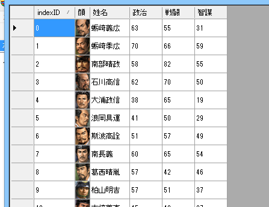

ここは、前節「メモリエディタを作る」の続きとなります。
さて、前節では、.NET FrameWorkのデータグリッドビューコンポーネントを利用して、メモリエディタを作成しました。
ここでは、その続きとして、｢データグリッドビューの中に、武将の顔グラを表示する」というのを行います。
8色の顔グラを表示する、というのも無理ではありませんが、ソース長くなっていくので、
ここでは、「フルカラーの顔グラフィックが、kao_24bitフォルダに存在する」というこを前提に組んでみましょう
前節のMemoryEditorFormの中身の変更となります。
まずはメモリビューワーを実現してみましょう。
前節では、全て「DataGridViewTextBoxColumn」型を扱ってきました。
今節では、これに加えて「DataGridViewImageColumn」という画像が扱える「縦列」を扱って、顔グラフィックを取り扱います。
又、画像を縮小する際に、よく利用されるやり方も盛り込まれています。
using namespace System;
using namespace System::Windows::Forms;
using namespace System::Drawing;
ref class MemoryEditorForm : public Form {
private:
DataGridView^ dgv; // データグリッドビュー型。 エクセルのように格子状のデータを表示できるため、非常によく利用される。
public:
MemoryEditorForm() {
this->Text = "MemoryEditor";
// データグリッド全体のインスタンス
dgv = gcnew DataGridView();
dgv->Height = 800;
dgv->Width = 1000;
dgv->RowTemplate->Height = 30; // 各々のセルの高さを30とする。
dgv->AutoSizeColumnsMode = DataGridViewAutoSizeColumnsMode::AllCells; // 各カラムの横幅はコンテンツに応じて自動調整
// .NETのString^型を要素とする、.NETの配列array^型。
cli::array<String^>^ colTitle = {"indexID", "顔", "姓名", "政治", "戦闘", "智謀"};
// -------------- ここからデータグリッドの「縦列に相当するカラムブジェクト」と、「各カラムのタイトル」の文字列をセッティングする。
// 「index:0 顔グラ:1 姓名:2 政治:3 戦闘:4 智謀:5」 という順番となる。
for (int i=0; i < colTitle->Length; i++) {
if ( colTitle[i] != "顔" ) {
// テキスト型の縦列のオブジェクトを作り
DataGridViewTextBoxColumn^ dgvtbc = gcnew DataGridViewTextBoxColumn();
// タイトル文字列を設定
dgvtbc->HeaderText = colTitle[i];
// グリッドビューに縦列として追加。
dgv->Columns->Add(dgvtbc);
} else {
// イメージ型の縦列のオブジェクトを作り
DataGridViewImageColumn^ dgvic = gcnew DataGridViewImageColumn();
// タイトル文字列を設定
dgvic->HeaderText = colTitle[i];
// グリッドビューに縦列として追加。
dgv->Columns->Add(dgvic);
}
}
// 各カラムに天翔記のデータ(532人の武将の、姓名、政才、戦才、智才)を足してゆく
DgvDataImport();
// データグリッドのセルを編集した時のイベントハンドラを登録する。
dgv->CellValueChanged += gcnew DataGridViewCellEventHandler(this, &MemoryEditorForm::dgv_CellValueChanged);
// データグリッドビューをフォームに乗っける
this->Controls->Add(dgv);
}
private:
// 武将番号【配列用】を引数として、顔番号を求め、フルカラーの顔画像があれば、
// それを24*30ピクセルのジメージオブジェクトにして返す。
Bitmap^ GetFaceBitmap(int iBushouID) {
// 武将の顔番号を求める
int iFaceID = p武将戸籍情報[iBushouID].顔番号;
// 顔番号→4桁のファイル名に
String^ strFaceFileName = String::Format("kao_24bit\\{0:0000}.bmp", iFaceID+1);
Bitmap^ bm = gcnew Bitmap(24, 30);
if (System::IO::File::Exists( strFaceFileName )) {
// bm の中を描画用意。
Graphics^ g = Graphics::FromImage(bm);
// バイキュービックモードとする。(PhotoShopのリサイズモードとかと似た概念)
g->InterpolationMode = System::Drawing::Drawing2D::InterpolationMode::HighQualityBicubic;
g->DrawImage(gcnew Bitmap(strFaceFileName), 0, 0, bm->Width, bm->Height); // 内部描画
}
return bm;
}
void DgvDataImport() {
// 横列単位で足してゆく、index:0, 姓:1, 名:2, 政治:3 戦闘:4 智謀:5 の順番通り
for ( int i=0; i<最大数::武将情報::配列数; i++) {
dgv->Rows->Add(
i,
GetFaceBitmap(i),
gcnew String(Get_名字(i).c_str())+gcnew String(Get_名前(i).c_str()),
p武将情報[i].最大政才,
p武将情報[i].最大戦才,
p武将情報[i].最大智才
);
}
}
void dgv_CellValueChanged(Object^ sender, DataGridViewCellEventArgs^ e) {
// イベントが発生したオブジェクト(=sender) はデータグリッド型なので、データグリッド型として受け取って…
DataGridView^ grid = (DataGridView^)sender;
// 一番左のIndexIDに入っている値が、武将番号【配列用】である。
int iBushouID = Convert::ToInt32(grid[0, e->RowIndex]->Value->ToString()); // indexIDが一番左だからcolumnは0
// 発生したイベントの列が3番目なら
if (e->ColumnIndex == 3) {
// 該当のグリッドの値をbyte型(256までの型)にして、p武将情報に代入する。
p武将情報[iBushouID].最大政才 = Convert::ToByte(grid[e->ColumnIndex, e->RowIndex]->Value->ToString());
}
// 発生したイベントの列が4番目なら
if (e->ColumnIndex == 4) {
// 該当のグリッドの値をbyte型(256までの型)にして、p武将情報に代入する。
p武将情報[iBushouID].最大戦才 = Convert::ToByte(grid[e->ColumnIndex, e->RowIndex]->Value->ToString());
}
// 発生したイベントの列が5番目なら
if (e->ColumnIndex == 5) {
// 該当のグリッドの値をbyte型(256までの型)にして、p武将情報に代入する。
p武将情報[iBushouID].最大智才 = Convert::ToByte(grid[e->ColumnIndex, e->RowIndex]->Value->ToString());
}
デバッグ出力 << "budhou:" << iBushouID << "row:" << e->RowIndex << "column:" << e->ColumnIndex << endl;
}
};
